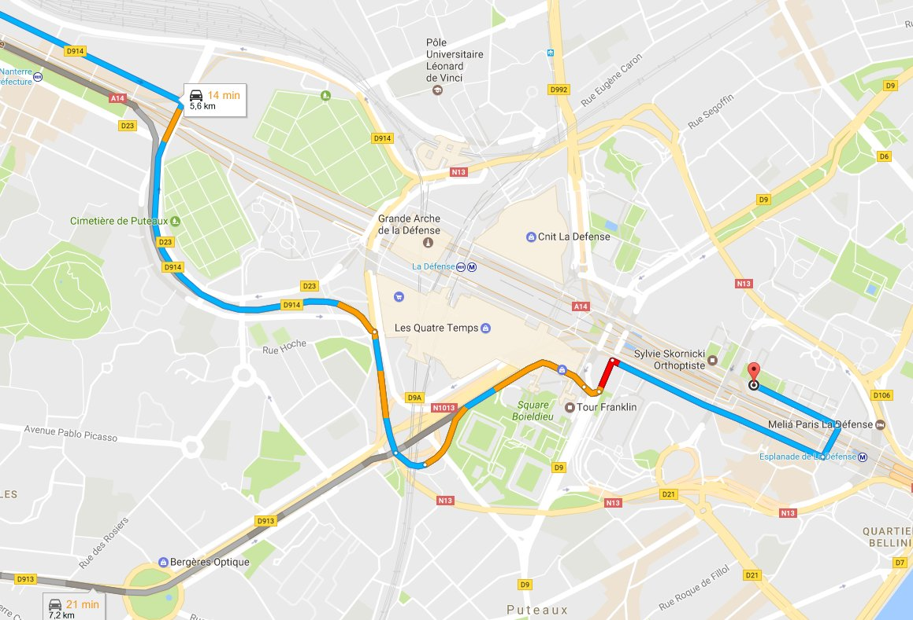
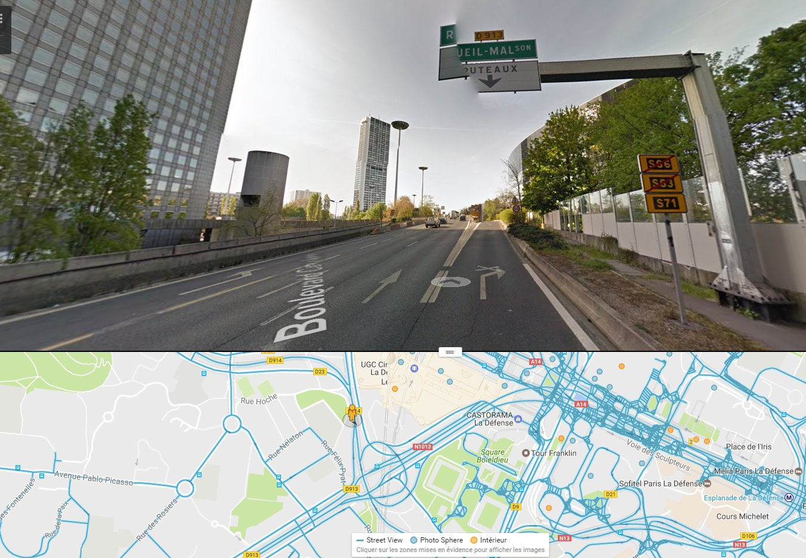
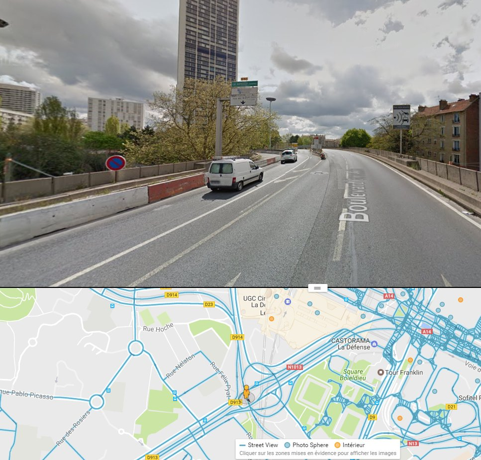

En voiture depuis Nanterre
-
Depuis Nanterre, il y a de fortes chances que vous passiez par le boulevard circulaire.

-
Vous verrez le panneau Puteaux, il ne faut pas sortir, continuez un peu, serrez à gauche.

-
Tournez à gauche en suivant le panneau La Défense Centre.

En passant par le marché des Bergères (Puteaux), vous suivez aussi La Défense Centre. Ensuite, prenez la voie des Bâtisseurs pour arriver au 52.
À l'arrivée, surveillez bien : sur la voie des Bâtisseurs, l'entrée est à droite, et il y a très peu d'entrées sur cette voie. Repère : un panneau Euronext à l'entrée. C'est une zone de livraison en U. Pour un stationnement ponctuel, pas de souci, mais tôt le matin une contravention reste possible.
Si vous ratez l'entrée
La voie des Bâtisseurs monte dans le sens de la circulation, vous ne pouvez pas revenir en arrière. De l'autre côté, en parallèle, c'est la voie des Sculpteurs, et elle descend.
Remontez jusqu'au bout de la voie des Bâtisseurs : vous tombez sur le rond-point de la Défense. Faites le tour, à droite puis à gauche.
Attention, ce rond-point n'est pas complètement rond. Les fontaines de la Défense sont au milieu.